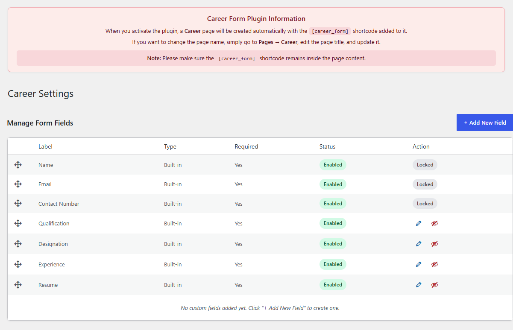
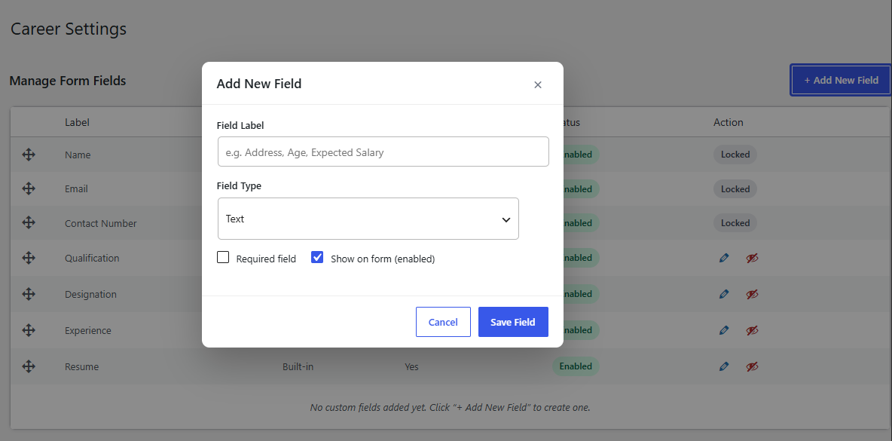
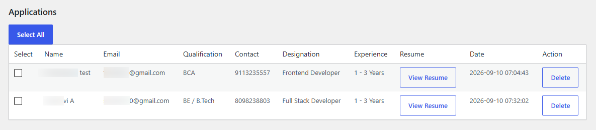
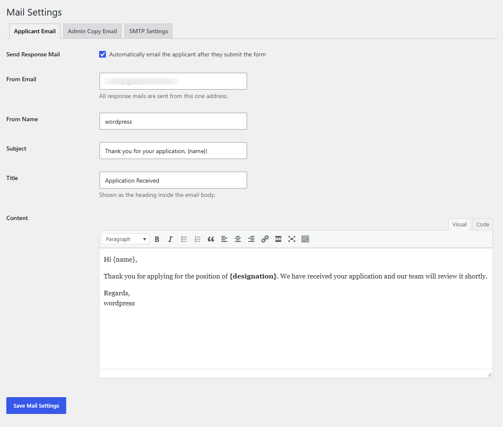
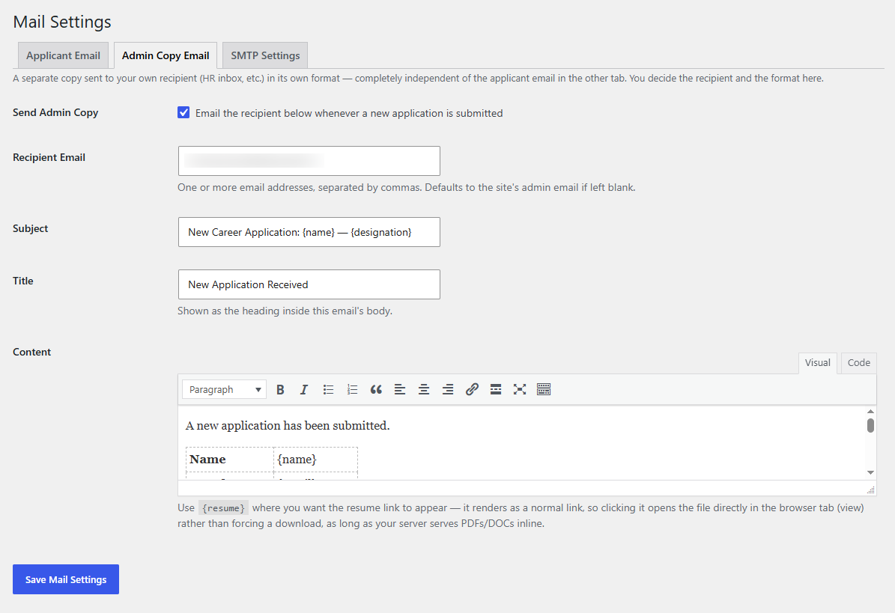

Everything the Career Form plugin does, one screen at a time.
Career Form drops a ready-made application page onto your site. Activate it and WordPress
creates a Career page with the [career_form] shortcode already in place — no
page building required. This guide walks through the admin screens: the fields applicants
fill in, where submissions land, and how the email notifications work.
The field table controls exactly what applicants see on the Career page.

Career Settings → Manage Form Fields
Seven fields ship with the plugin, and they're split into two tiers. Name, Email,
and Contact Number are locked — required for every application and can't be
disabled, since they're what you need to actually reach an applicant. Qualification,
Designation, Experience, and Resume are editable: toggle their visibility with the
eye icon, or open the pencil to rename a label or flip whether it's required.
Locked fields
Name, Email, Contact Number — always required, always on.
Editable fields
Qualification, Designation, Experience, Resume — required and enabled can both be changed per field.
Reorder
Drag the four-arrow handle on the left of any row to change field order on the live form.
02
Add New Field
Custom fields extend the application without touching code.

Manage Form Fields → + Add New Field
Click + Add New Field to open the modal. Give it a label — the placeholder
suggests things like Address, Age, or Expected Salary — and pick a field type from the
dropdown. Two checkboxes decide its behavior: Required field forces
applicants to fill it in before submitting, and Show on form controls
whether it appears at all, so you can stage a field before switching it on.
1Name the field the way an applicant would recognize it.
2Choose a field type from the dropdown.
3Decide if it's required, and whether it should show immediately.
4Save Field — it appears in the table alongside the built-ins.
03
Applications
Every submission, with the resume one click away.

Career Settings → Applications
Submissions land in a single table — name, email, qualification, contact number,
designation, and years of experience, all sortable at a glance. View Resume
opens the uploaded file directly; Delete removes an application for good.
Tick individual rows or use Select All to batch-manage a long list.
04
Mail Settings — Applicant Email
The automatic confirmation an applicant receives after submitting.

Mail Settings → Applicant Email
With Send Response Mail checked, every applicant gets a receipt the moment
they submit. Set the sending address and display name, then write the subject, title, and
body in the rich text editor. Two placeholders do the personalizing:
{name} and {designation} — drop them anywhere in the subject or
content and the plugin fills in the applicant's own details.
05
Mail Settings — Admin Copy Email
A separate notification that lands in your own inbox.

Mail Settings → Admin Copy Email
This tab is independent of the applicant email — its own recipient, its own format. Turn on
Send Admin Copy and list one or more addresses in Recipient Email,
comma-separated; leave it blank and it falls back to the site's admin address. The content
editor supports the same {name} / {designation} placeholders, plus
{resume}, which renders as a plain link so the resume opens straight in the
browser tab rather than forcing a download — as long as your server serves PDFs and DOCs
inline.
Delivery
Both emails are sent through WordPress's built-in wp_mail() — no SMTP setup or extra plugin required. If a site's host blocks PHP's mail function, use a general-purpose SMTP plugin alongside Career Form; this plugin doesn't need its own SMTP settings to work.